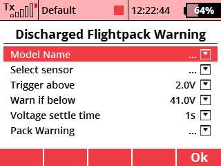

Warn if a discharged flight pack is installed. While this is simple when you have only the main pack plugged into the ESC, it is more complex when you have a Mezon 90 and a secondary RX power supply with the main power being armed later via an arming plug.
Announce the name of the model using an audio file of the user's choice - while this could have been done in a separate lua script, given the current limitation of 10 lua scripts active per model it seemed silly to burn a lua script slot for such a trivial matter, so we added it to this app.
Both of the above functions can be implemented using various combinations of telemetry controls, sequencers, and logical switches, however the implementation is very complex and prone to generating false positive alerts. This implements the needed functionality quite simply using the Lua scripting capabilities of the JETI DS/DC-16 and JETI DC/DS-24.
App configuration form is found under "Discharged Flightpack Warning" settings under the Timers/Sensors menu.
The discharged flight pack warning has three key "latch" parameters:
Trigger above (v) - until the specified sensor has seen a voltage ABOVE the trigger voltage, no warnings will be issued. This allows for the "voltage backfeed" from a backup battery powered RX to the Mezon ESC causing the ESC to read a voltage near 8v (for a 2s lipo powered RX) indefinitely.
Voltage settle time - Once a voltage above the designated threshold is seen, the system waits a number of seconds specified by this parameter for capacitors to charge before reading the main pack voltage and issuing a warning if necessary.
Warn below (v) - once the main pack voltage check has been triggered as discussed above, the system will trigger a warning if the main pack voltage is below the target voltage. For example, on a 10s pattern ship, one might choose to set the warn below voltage to somewhere between 41 and 41.6 volts as a fully charged 10s pack should be at or above 41v in a no-load situation right after arming.
You can download the source code from the official JETImodel Lua-Apps GitHub repository.